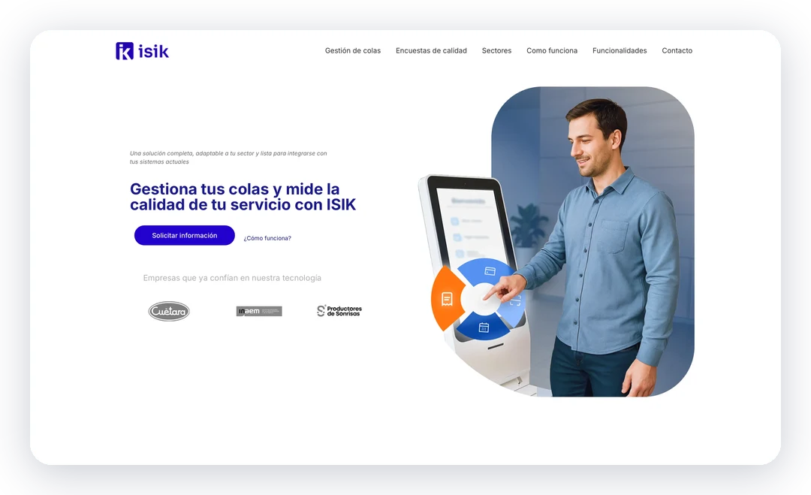
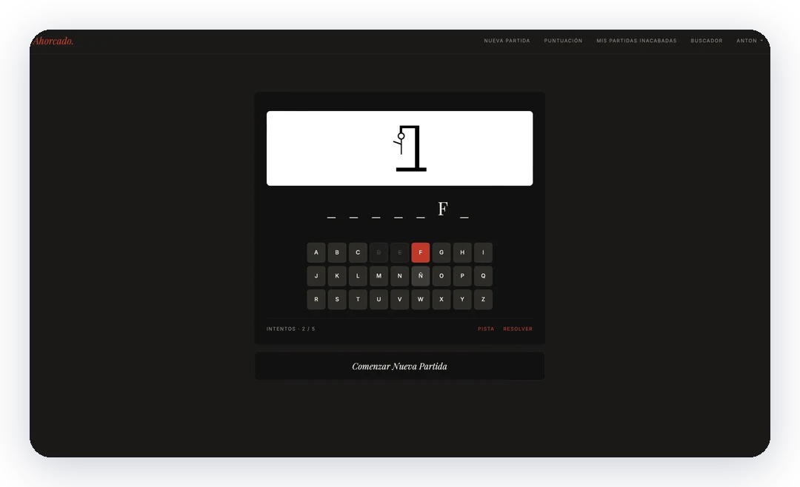
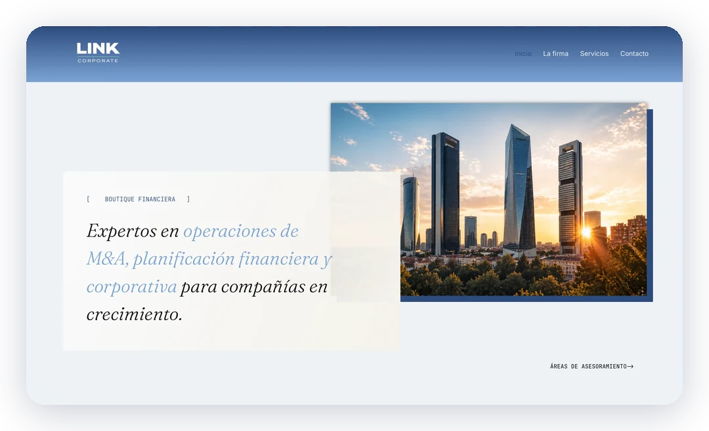

- Caso de estudio
- PHP
- JavaScript
- WebRTC
ISIK Quioscos
Plataforma modular para quioscos de ticketing: pagos con tarjeta, recepción por videollamada e impresión de tickets.
PróximamenteProyectos reales y conceptuales, contados con su proceso: el problema, las decisiones y lo que aprendí.

Plataforma modular para quioscos de ticketing: pagos con tarjeta, recepción por videollamada e impresión de tickets.
Próximamente
Durante mis prácticas desarrollé tres webs para clientes reales. Están creadas con WordPress, Elementor y CSS.
El cliente se especializa en la personalización de software desarrollado para totems tipo quiosco.

El cliente es una boutique financiera especialista en operaciones de inversión y capitalización.

El cliente ofrece servicios de diseño y desarrollo de terminales multimedia y software personalizados.